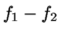
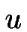
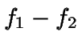
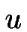
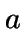

- 3.1 The Partial Discrete Derivative
- 3.2 The Indefinite Discrete Integral
- 3.3 The Definite Discrete Integral
- 3.4 Theorems involving the Discrete Integral
- 3.5 Some Standard Discrete Integrals
3. The Discrete Integral
3.1 The Partial Discrete Derivative
Before introducing the Discrete Integral, we must first define a certain type of Partial Discrete Derivative which will play a fundamental role in defining the Discrete Integral.
Definition 3.1
Consider a function of three complex variables which
for any fixed pair is analytic on  . Then the
Partial Discrete Derivative of
. Then the
Partial Discrete Derivative of  is defined as
is defined as
This does not define the Partial Discrete Derivative in general.
3.2 The Indefinite Discrete Integral
Definition 3.2
If we have a function such that
for some function then we call an Indefinite Discrete Integral of and write
3.2.1 Properties of the Indefinite Discrete Integral
Proposition 3.1
If and are both Indefinite Discrete Integrals of a
function  , then  is a function of  and
, then  is a function of  and
 only.
only.
Proposition 3.2
All analytic functions have Indefinite Discrete Integrals.
Proposition 3.3
Proof.
For the Discrete Integral to exist, there must be some function
 which the Discrete Integral is equal to, such that
Therefore
which the Discrete Integral is equal to, such that
Therefore

Proposition 3.5
Proposition 3.6
Proposition 3.7
Proposition 3.8
Proposition 3.9
The Centered (i.e. with  ) Discrete Integral of an odd
function is an even function, and vice versa.
) Discrete Integral of an odd
function is an even function, and vice versa.
Proof.
Follows from Proposition 2.8.
Proposition 3.10
Proposition 3.11
Given that
are independent of each other, and
are independent of each other, then
even if are not independent of each other in general.
3.3 The Definite Discrete Integral
Definition 3.3
If a function has an Indefinite Discrete Integral, then the
Definite Discrete Integral of the function between  and
is defined as
3.3.1 Properties of the Definite Discrete Integral
Proposition 3.12
The Definite Discrete Integral of a function is unique.
Proposition 3.13
Consider a complex function which has a Discrete Integral,
together with constants
, such that
for some
. Then
Proposition 3.14
Proposition 3.15
Proposition 3.16
3.4 Theorems involving the Discrete Integral
Theorem 3.1
For example, if we consider we get
3.5 Some Standard Discrete Integrals
It is only necessary to tabulate Discrete Integrals with  .
The more general derivative can be found by substituting
.
The more general derivative can be found by substituting  with (see Proposition 3.4).
with (see Proposition 3.4).